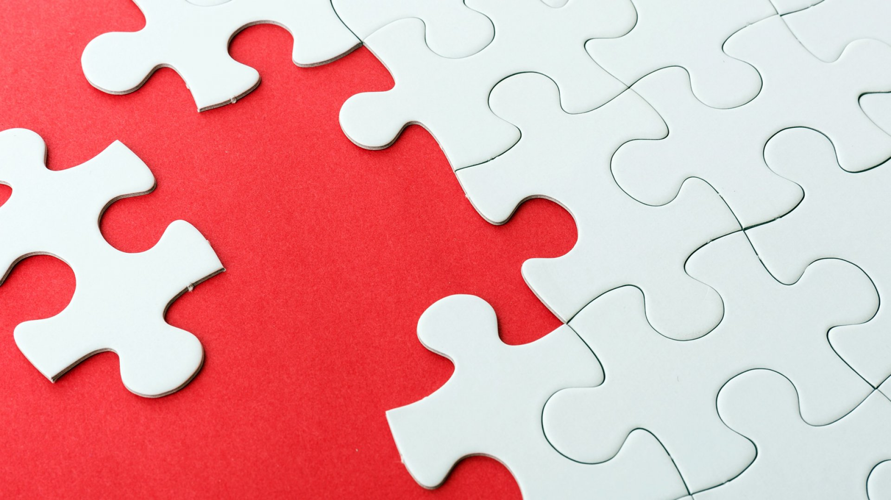

Almost all plastic we produce ends up in landfills or in the nature. Only 9% is recycled1. The plastic in nature kills millions of animals, fish and birds. Plastic in the ocean is now the world’s largest environmental issue. The synthetic material does not decompose, and we will continue to accumulate amounts of plastic in nature impossible to imagine. But we will still challenge you to imagine. Try to imagine the weight of the entire human population, 316 million tons2. That is what plastic production amounts to every year. Times that by 26, 8,3 billion tons. That is how much plastic we have produced since we started producing and consuming plastic in the early 1950's. 60% of the plastic is not recycled. If we begin to talk about the production of plastic from the production of oil to treatment, the environmental picture makes you sigh woefully, and the situation might seem inconsolable. It is estimated that plastic will amount to 30 percent of the worlds CO2 emissions in 30 years4.
This production and consumption of plastic is in no way sustainable. The United Nations goal number 12 aims to “ensure sustainable consumption and production patterns”1. It is clear that we have a long way to go to be sustainable in consumption and production of plastic. We have enough plastic to stop production, if we can recycle what we already have produced. We are currently spending on the expense of future generations. We are drinking from the hotel minibar and when we wake up tomorrow hungover, we will have to pick up the tab.